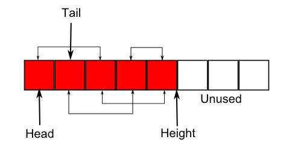

Doubly-linked list embedded in an array
Description
Two disadvantages of linked lists are:
- The potentially large distance in memory between successive nodes can lead to poor cache performance
- Adding and removing elements means allocating and deallocating large numbers of small blocks of memory.
One solution is to allocate a single block of nodes, and then construct the list from them, effectively embedding the list in the block.

You can grow the block if more nodes are needed, but this invalidates pointers to existing nodes, so in order to keep the links between nodes valid, they are the integer offsets of the nodes within the block rather than pointers.
struct MBlanode {
unsigned int next;
unsigned int previous;
void * data;
};
typedef struct MBlanode MBlanode;
Since nodes cannot be individually freed, it is also necessary to recycle them by maintaining a free node list.
It isn't, however, necessary to put nodes that have not yet been used in the free node list.
One can instead keep track of the extent of the block that has been used, the height, and know that those nodes beyond it are free.
Creation
Create a list with MBlistarray_create.
Adding elements
Elements are added with MBlistarray_add_head, MBlistarray_add_tail, MBlistarray_insert_before, and MBlistarray_insert_after.
Removing elements
Elements are removed with MBlistarray_remove_head, MBlistarray_remove_tail and MBlistarray_remove.
Accessing elements
Iterate over the elements by using MBlistarray_get_head, MBlistarray_get_tail, MBlistarray_get_next, MBlistarray_get_previous and MBlistarray_get_data.
Example program
#include <stdio.h>
#include <string.h>
#include <listarray.h>
int main(void)
{
MBlistarray * list = MBlistarray_create();
char * elements[] = {"A", "B", "C", "D", "E", "F"};
const unsigned int n = sizeof(elements) / sizeof(const char*);
unsigned int i;
unsigned int node;
unsigned int found = 0;
MBiterator *iterator;
const char *data;
for (i = 0; i < n; i++) {
MBlistarray_add_tail(list, elements[i]);
}
for (node = list->head; node != MBLISTARRAY_NIL && !found; node = MBlistarray_get_next(list, node)) {
if (strcmp((const char*)MBlistarray_get_data(list, node), "C") == 0) {
MBlistarray_insert_before(list, node, "X");
MBlistarray_insert_after(list, node, "Y");
found = 1;
}
}
puts("Forwards:");
for (node = MBlistarray_get_head(list); node != MBLISTARRAY_NIL; node = MBlistarray_get_next(list, node)) {
printf("%s\n", (const char*)MBlistarray_get_data(list, node));
}
puts("Backwards:");
for (node = MBlistarray_get_tail(list); node != MBLISTARRAY_NIL; node = MBlistarray_get_previous(list, node)) {
printf("%s\n", (const char*)MBlistarray_get_data(list, node));
}
puts("Using iterator:");
iterator = MBlistarray_iterator(list);
while ((data = MBiterator_get(iterator))) {
puts(data);
}
MBiterator_delete(iterator);
MBlistarray_delete(list);
return 0;
}
Source code
Related
Doubly-linked embedded in an array with compaction